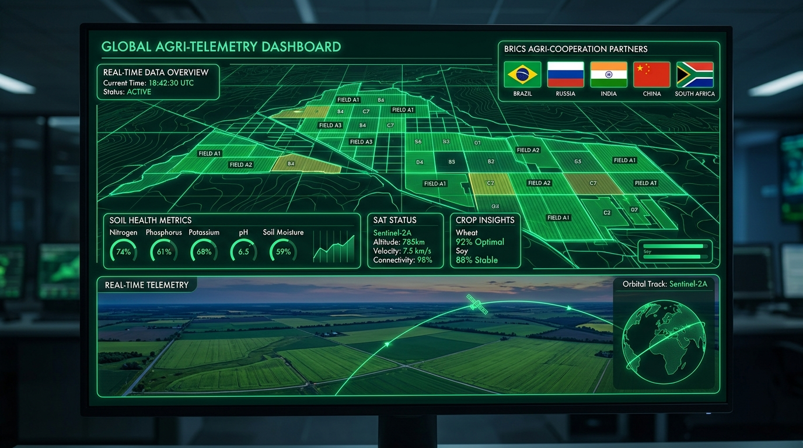
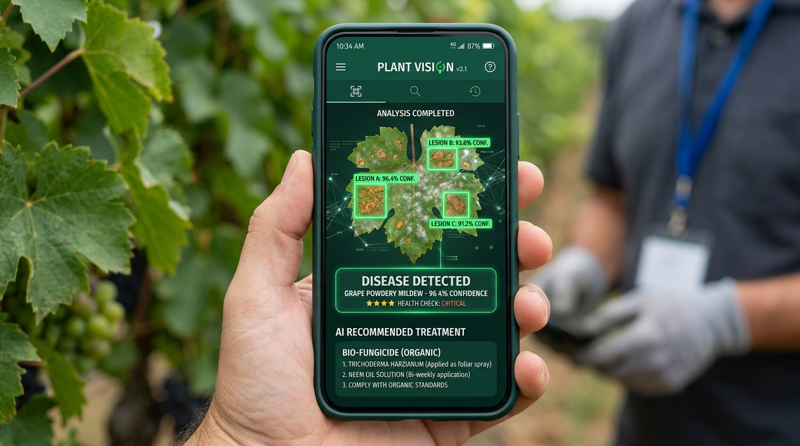
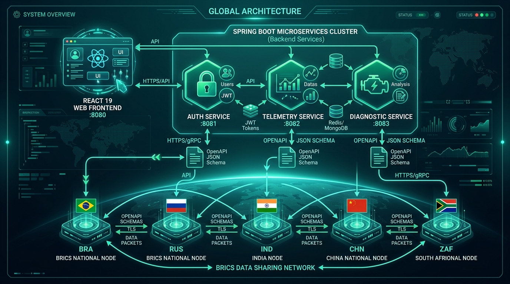
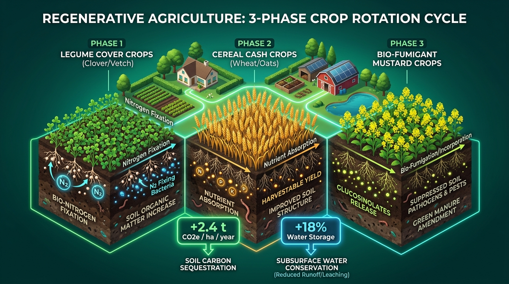

Smallholder farmers across BRICS emerging economies lack access to real-time satellite imagery, soil health analytics, and climate forecasting.
Relying on traditional methods leads to frequent crop failures, reduced soil microbial health, and threatens regional food security.
Excess synthetic nitrogen fertilizers degrade soil organic carbon and pollute local groundwater tables.
The absence of shared digital public infrastructure blocks cross-border BRICS collaboration on climate-resilient farming models.

React 19 + Vite + Tailwind CSS + Leaflet GIS Maps + Lucide Icons


AgriN — Empowering BRICS Agriculture Through Digital Cooperation